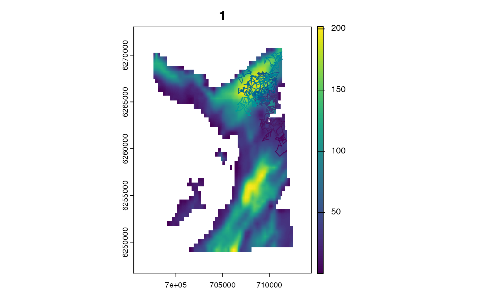
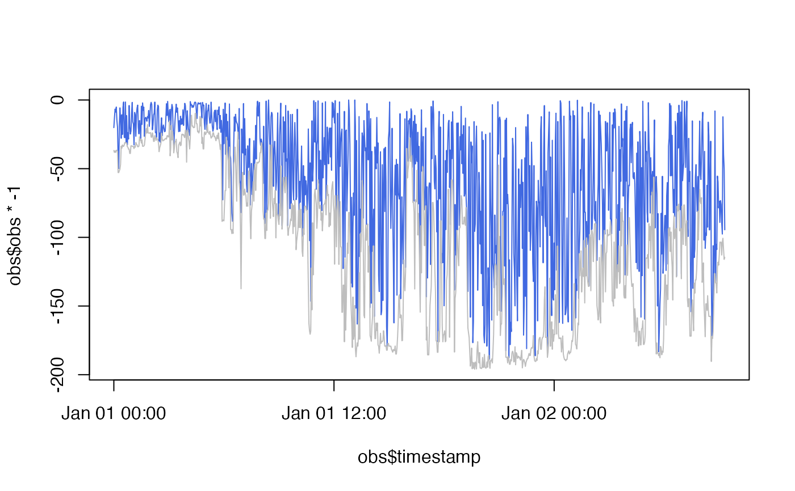
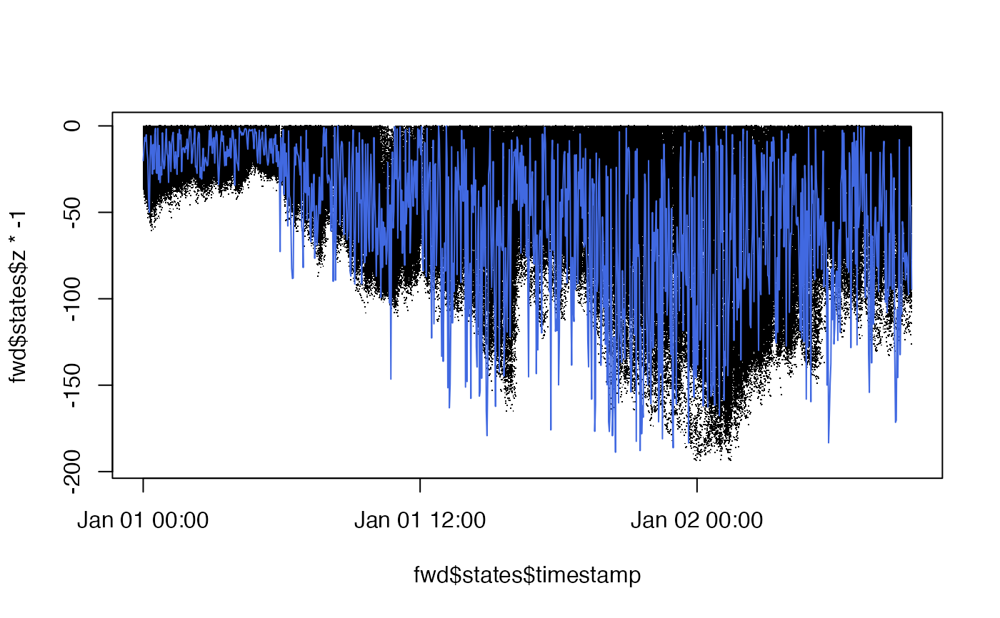

State is an Abstract Type in Patter.jl that groups state sub-types.
State sub-types are Julia structures that hold the parameters that describe the state of an individual at a given time step. 'State' typically means 'location' (in two or three dimensions), but individual states may include additional fields for those state dimensions that depend on the state time step. (For example, in correlated random walks, the State should contain the heading, given that the heading at one time step depends on the previous heading and a turning angle.) From an R-user perspective, you can think of a State sub-type as an S4-class-like object, with slots for the state dimensions.
In patter functions, the .state argument is a character string that defines the animal's state sub-type. This must match a State sub-type defined in Julia. The built-in options are:
"StateXY", which maps to StateXY;
"StateXYZ", which maps to StateXYZ;
"StateCXY", which maps to StateCXY ;
"StateCXYZ", which maps to StateCXYZ;
See State or JuliaCall::julia_help("State") for the fields of the built-in sub-types.
.state is used by sim_path_walk() and pf_filter(), both of which effectively simulate time series of states. .state controls the simulation of initial locations and subsequent method dispatch in Patter.jl. Patter.sim_states_init() handles the simulation of initial states in these routines. When .state is
"StateXY", the initial state comprises x and y coordinates;
"StateXYZ", the initial state comprises x, y and z coordinates;
"StateCXY", the initial state comprises x and y coordinates and an initial heading;
"StateCXYZ", the initial states comprises x, y and z coordinates and an initial heading;
All states additionally include a map_value field that defines the value on the movement map at (x, y).
The outcome of Patter.sim_states_init() is a DataFrame of initial state(s), which is coerced to a Vector of States in Julia for the simulation. In Patter.jl, the simulation of subsequent states depends on the input state and the movement model.
The state must match the movement model (see ModelMove):
For "StateXY", a movement model that simulates step lengths and headings, and updates state components (that is, x and y coordinates), is required;
For "StateXYZ", a movement model that simulates step lengths, headings and depths, and updates state components (that is, x, y and z coordinates), is required;
For "StateCXY", a movement model that simulates step lengths and turning angles, and updates x, y, heading state components, is required.
For "StateCXYZ", a movement model that simulates step lengths, turning angles and changes in depth, and updates x, y, z and heading state components, is required.
To use custom ModelObs sub-types, see Examples.
The routines in patter for the simulation of individual movements, observations and statistical modelling are built upon three Abstract Types defined in Julia:
# Patter contains multiple built-in `State` and `ModelMove` sub-types that you can use
# ... (with custom parameters) simulate movements and for particle filtering.
# To use a new sub-type, follow the workflow below. Some extra work is required
# ... because we have to register the sub-type in `Julia` and write the
# ... required methods to simulate initial states, movement and/or
# ... evaluate movement densities.
if (patter_run(.julia = TRUE, .geospatial = TRUE)) {
library(data.table)
library(JuliaCall)
library(testthat)
#### Julia set up
# Connect to Julia
julia <- julia_connect()
# Set seed
set_seed()
# Export map to Julia
map <- dat_gebco()
set_map(map)
#### Define a `State` and a corresponding `ModelMove` instance
# We consider a random walk in X, Y, Z
# > This is for demonstration only!
# > The structures and methods below are already directly available!
# > (See: ?StateXYZ, ?ModelMoveXYZ, ?model_move_xyz)
# Define a custom `State` sub-type
julia_command(
'
struct StateCustom <: Patter.State
# Map value
# > This is required for all states & is the value on the map at (x, y)
map_value::Float64
# Coordinates
x::Float64
y::Float64
z::Float64
end
'
)
# Define a corresponding movement model sub-type
# > We will consider a random walk in 3D
julia_command(
'
struct ModelMoveCustom{T, U, V, W, X} <: Patter.ModelMove
# The environment (i.e., map)
# > This defines the regions within which movements are permitted (i.e., in water)
map::T
# Distribution for step lengths
mobility::U
dbn_length::V
# Distribution for headings
dbn_heading::W
# Distribution for changes in depth
dbn_z_delta::X
end
'
)
# Instantiate the movement model
# > We will write an R function to instantiate the movement model
model_move_custom <- function(.mobility = "750.0",
.dbn_length = "truncated(Gamma(1.0, 750.0), upper = 750.0)",
.dbn_heading = "Uniform(-pi, pi)",
.dbn_z_delta = "Normal(0, 3.5)") {
# (optional) Verify the map (`env` in Julia) exists:
# patter:::julia_check_exists("env")
# Define the movement model `Julia` code as a String
glue::glue('ModelMoveCustom(env,
{.mobility},
{.dbn_length},
{.dbn_heading},
{.dbn_z_delta});')
}
# (optional) Define a `Patter.states_init()` method to simulate initial states
# * This function should accept:
# * `state`: the state;
# * `coords`: A `data.table` with initial coordinates (x, y and map_value);
julia_command(
'
function Patter.states_init(state_type::Type{StateCustom}, coords::DataFrame)
coords.z = coords.map_value .* rand(nrow(coords))
return coords
end
'
)
# Define a `Patter.simulate_step()` method to update the state in Julia
julia_command(
'
function Patter.simulate_step(state::StateCustom, model::ModelMoveCustom, t::Int64)
# Simulate a step length
length = rand(model.dbn_length)
# Simulate a heading
heading = rand(model.dbn_heading)
# Calculate new x, y, z coordinates
x = state.x + length * cos(heading)
y = state.y + length * sin(heading)
z = state.z + rand(model.dbn_z_delta)
# Include the map value
map_value = Patter.extract(model.map, x, y)
# Define the state
StateCustom(map_value, x, y, z)
end
'
)
#### Simulate path(s)
timeline <- seq(as.POSIXct("2016-01-01", tz = "UTC"),
length.out = 1000L, by = "2 mins")
paths <- sim_path_walk(.map = map,
.timeline = timeline,
.state = "StateCustom",
.model_move = model_move_custom(),
.plot = TRUE)
#### Simulate observations arising from the simulated path
# We consider a pelagic animal & simulate depth observations
# At each time step, the animal may be anywhere from the surface to the seabed
model_obs <- list(ModelObsDepthUniformSeabed = data.table(sensor_id = 1L,
depth_shallow_eps = 500,
depth_deep_eps = 0))
obs <- sim_observations(.timeline = timeline,
.model_obs = model_obs)
obs <- obs$ModelObsDepthUniformSeabed[[1]]
yobs <- list(ModelObsDepthUniformSeabed = obs)
# Plot simulated depth trajectory
# * Blue: simulated time series
# * Grey: seabed depth for simulated time series
ylim <- range(c(obs$obs, paths$map_value) * -1)
plot(obs$timestamp, obs$obs * -1, ylim = ylim, col = "royalblue", type = "l")
lines(paths$timestamp, paths$map_value * -1, col = "grey")
# > The individual ranges from the seabed to the surface
expect_true(max(obs$obs - paths$map_value) < 0)
#### Run the forward filter
# (optional) Define initial states, by:
# A) Starting the filter in the correct location by masking `.map`
# B) Specifying a complete data.table of initial state(s)
origin <- terra::setValues(map, NA)
cell <- terra::cellFromXY(map, cbind(paths$x[1], paths$y[1]))
origin[cell] <- paths$map_value[1]
set_map(origin, .as_Raster = TRUE, .as_GeoArray = FALSE)
# Run the filter
fwd <- pf_filter(.timeline = timeline,
.state = "StateCustom",
.yobs = yobs,
.model_move = model_move_custom())
# Visualise reconstructed time series
# * Black: particle depths
# * Blue: simulated time series
ylim <- range(c(fwd$states$z, obs$obs, paths$map_value) * -1)
plot(fwd$states$timestamp, fwd$states$z * -1, ylim = ylim, pch = ".")
lines(obs$timestamp, obs$obs * -1 , col = "royalblue")
#### Run the backward filter
# Define origin
origin <- terra::setValues(map, NA)
n <- nrow(paths)
cell <- terra::cellFromXY(map, cbind(paths$x[n], paths$y[n]))
origin[cell] <- paths$map_value[n]
set_map(origin, .as_Raster = TRUE, .as_GeoArray = FALSE)
# Run the filter
bwd <- pf_filter(.timeline = timeline,
.state = "StateCustom",
.yobs = yobs,
.model_move = model_move_custom(),
.direction = "backward")
#### Run the smoother
# Write a `Patter.logpdf_step()` method
# ... to evaluate the unnormalised log probability (density)
# ... of an unrestricted step from one state to another
# See: julia_help("Patter.logpdf_step")
julia_command(
'
function Patter.logpdf_step(state_from::StateCustom, state_to::StateCustom,
model_move::ModelMoveCustom,
t::Int64,
length::Float64, heading::Float64)
# Calculate change in depth
z_delta = state_to.z - state_from.z
# Evaluate unnormalised log probability
logpdf(model_move.dbn_length, length) +
logpdf(model_move.dbn_heading, heading) +
logpdf(model_move.dbn_z_delta, z_delta)
end
'
)
# Run the smoother
# * >500 particles are required here to ensure
# ... sufficient matching between `fwd` & `bwd`
smo <- pf_smoother_two_filter(.n_particle = 550L)
#### (optional) Map UD
# map_dens(map, .coord = smo$states)
}
#>
#> Attaching package: ‘testthat’
#> The following object is masked from ‘package:dplyr’:
#>
#> matches
#> `Julia` already connected. Set `.socket = TRUE` to reconnect.
#> Warning: Use `seq.POSIXt()` with `from`, `to` and `by` rather than `length.out` for faster handling of time stamps.

#> Warning: Use `seq.POSIXt()` with `from`, `to` and `by` rather than `length.out` for faster handling of time stamps.

#> `patter::pf_filter()` called @ 2025-03-13 20:42:18...
#> `patter::pf_filter_init()` called @ 2025-03-13 20:42:18...
#> ... 20:42:18: Setting initial states...
#> Warning: Use `seq.POSIXt()` with `from`, `to` and `by` rather than `length.out` for faster handling of time stamps.
#> ... 20:42:19: Setting observations dictionary...
#> `patter::pf_filter_init()` call ended @ 2025-03-13 20:42:19 (duration: ~1 sec(s)).
#> ... 20:42:19: Running filter...
#> Message: On iteration 1 ...
#>
#> Message: Running filter for batch 1 / 1 ...
#>
#> ... 20:42:19: Collating outputs...
#> `patter::pf_filter()` call ended @ 2025-03-13 20:42:20 (duration: ~2 sec(s)).

#> `patter::pf_filter()` called @ 2025-03-13 20:42:20...
#> `patter::pf_filter_init()` called @ 2025-03-13 20:42:20...
#> ... 20:42:20: Setting initial states...
#> Warning: Use `seq.POSIXt()` with `from`, `to` and `by` rather than `length.out` for faster handling of time stamps.
#> ... 20:42:20: Setting observations dictionary...
#> `patter::pf_filter_init()` call ended @ 2025-03-13 20:42:20 (duration: ~0 sec(s)).
#> ... 20:42:20: Running filter...
#> Message: On iteration 1 ...
#>
#> Message: Running filter for batch 1 / 1 ...
#>
#> ... 20:42:20: Collating outputs...
#> `patter::pf_filter()` call ended @ 2025-03-13 20:42:20 (duration: ~0 sec(s)).
#> `patter::pf_smoother_two_filter()` called @ 2025-03-13 20:42:20...
#> ... 20:42:20: Running smoother...
#> Message: Running smoother for batch 1 / 1 ...
#>
#> Message: Precomputing normalisation constants for batch ...
#>
#> Message: Smoothing ...
#>
#> ... 20:42:24: Collating outputs...
#> `patter::pf_smoother_two_filter()` call ended @ 2025-03-13 20:42:24 (duration: ~4 sec(s)).